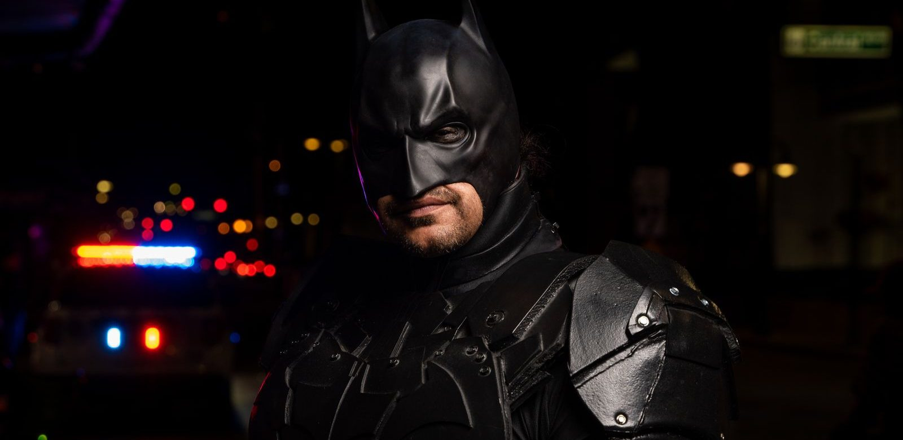

Wie is Batman?
Batman is Bruce Wayne: een rijke man uit Gotham City die helemaal geen superkrachten heeft. Hier lees je hoe hij Batman werd, wat hij kan, wie er om hem heen staan en in welke films hij te zien is.

In het kort
Batman is Bruce Wayne, een held zonder superkrachten. Overdag is hij de rijke baas van het bedrijf Wayne Enterprises. ’s Nachts beschermt hij zijn stad Gotham City. Alles wat hij kan, heeft hij zelf geleerd of zelf gekocht: trainen, nadenken en heel goede spullen.
| Echte naam | Bruce Wayne |
| Wat hij doet | Baas van Wayne Enterprises overdag, held in Gotham City ’s nachts |
| Superkracht | Geen. Hij is slim, in topvorm getraind en heeft goede spullen |
| Eerste keer in een strip | Detective Comics nummer 27, 1939 |
| Bedacht door | Bob Kane en Bill Finger |
| Gespeeld door | Onder anderen Adam West, Michael Keaton, Val Kilmer, George Clooney, Christian Bale, Ben Affleck en Robert Pattinson |
| Hoort bij | Gotham City en de Justice League |
Hoe hij Batman werd
Bruce was acht jaar oud toen hij met zijn ouders uit de bioscoop kwam. Op straat werden zijn vader, de dokter Thomas Wayne, en zijn moeder Martha Wayne vermoord door een misdadiger die Joe Chill heette.
Bruce beloofde zichzelf toen dat hij zijn leven zou besteden aan het bestrijden van misdaad. Hij trainde jarenlang zijn lichaam en zijn hoofd. Om boeven schrik aan te jagen koos hij een vermomming waar hij zelf ooit bang voor was: een vleermuis. Zo werd Batman geboren, in Detective Comics nummer 27 uit 1939.
Wat Batman kan
- Denken als een rechercheur. Dit is zijn grootste kracht. Hij lost raadsels op en vindt sporen die de politie mist. Zijn stripblad heet niet voor niets Detective Comics.
- Vechten. Hij beheerst 127 verschillende vechtsporten, want hij traint al sinds hij jong was.
- In topvorm zijn. Hij haalt het uiterste uit een gewoon mensenlichaam, maar hij blijft een mens: een kogel kan hem raken.
- Talen spreken. Meer dan veertig, plus veel kennis van scheikunde, natuurkunde en techniek.
- Zijn gordel vol gadgets. De beroemde utility belt met werpsterren, rookbommen en de grijphaak waarmee hij langs gebouwen omhoog schiet.
- De Batmobiel. Zijn gepantserde auto, en verder een berg andere voertuigen.
- De Batcave. Zijn geheime grot onder Wayne Manor, met computers, een lab en de plek waar al zijn spullen staan.
- Heel veel geld. Wayne Enterprises betaalt alles. Zonder dat bedrijf was er geen Batmobiel.
Wie er om hem heen staan
- Alfred Pennyworth, zijn butler en zijn tweede vader. Hij verscheen voor het eerst in 1943 en houdt het huis, de grot en Bruce zelf overeind.
- Dick Grayson, de allereerste Robin, vanaf 1940. Als hij ouder is gaat hij zelfstandig verder onder de naam Nightwing.
- Jason Todd, de tweede Robin. Zijn verhaal loopt slecht af en hij komt later terug als Red Hood.
- Tim Drake, de derde Robin, vanaf 1989. Hij noemt zichzelf later Red Robin.
- Damian Wayne, de vijfde Robin, en de echte zoon van Bruce.
- Barbara Gordon, oftewel Batgirl, en de dochter van de politiebaas.
- Commissaris James Gordon, de baas van de politie in Gotham. Hij zet het Bat-signaal aan als hij hulp nodig heeft.
- Lucius Fox, de man van Wayne Enterprises die de techniek regelt.
Zijn tegenstanders
- The Joker. Zijn grootste vijand: een misdadiger met een clownsgezicht die alles doet om Batman uit balans te brengen.
- Two-Face. Vroeger heette hij Harvey Dent en was hij officier van justitie. Nu laat hij alles beslissen door een muntje.
- The Riddler. Hij laat overal raadsels achter, want hij wil bewijzen dat hij slimmer is dan Batman.
- The Penguin. Een deftige boef met een paraplu, die de onderwereld van Gotham bestuurt.
- Bane. De sterkste van allemaal, en de enige die Batman ooit echt gebroken heeft.
- Scarecrow. Hij werkt met een gas dat mensen doodsbang maakt.
- Poison Ivy. Zij vecht met planten en gif.
- Mr. Freeze. Hij bevriest alles met zijn vrieskanon.
- Ra’s al Ghul. Een tegenstander die al eeuwen leeft en de wereld met geweld wil opruimen.
- Catwoman. Selina Kyle is een inbreekster, maar geen gewone schurk: soms vecht ze tegen Batman en soms aan zijn kant.
In welke films zit hij?
- Batman (1966), met Adam West. De vrolijke, kleurige versie.
- Batman (1989), met Michael Keaton.
- Batman Returns (1992), met Michael Keaton.
- Batman Forever (1995), met Val Kilmer.
- Batman & Robin (1997), met George Clooney.
- Batman Begins (2005), met Christian Bale. De eerste van drie films van regisseur Christopher Nolan.
- The Dark Knight (2008), met Christian Bale, tegenover de Joker.
- The Dark Knight Rises (2012), met Christian Bale, tegenover Bane.
- The Batman (2022), met Robert Pattinson.
Daarnaast speelt hij mee in films die niet zijn naam dragen: in Batman v Superman: Dawn of Justice (2016) staat Ben Affleck in het pak, en in Justice League (2017) vecht Batman samen met Superman, Wonder Woman en Aquaman.
👪 Tip voor ouders
De Batman-films lopen enorm uiteen. Die uit 1966 is een vrolijke familiefilm, terwijl de nieuwere films donker en spannend zijn en over echte misdaad gaan. Ze hebben dus ook heel verschillende leeftijdsadviezen: kijk per film even op Kijkwijzer voordat u er samen voor gaat zitten. Voor jongere kinderen zijn er tekenfilms en Lego-versies.
💡 Wist je dat?
Batman kreeg zijn uiterlijk van de man die er het minst bekend om werd. Bill Finger bedacht de kap, de cape en de handschoenen en maakte het pak donker; het eerste ontwerp van Bob Kane zag er heel anders uit. En Batman heeft dus geen enkele superkracht: dat is precies waarom zoveel kinderen hem kiezen.
Meer lezen? Bekijk de gadgets van Batman, lees het coolste Batman speelgoed, of bekijk de hele Batman pagina.
Zelf spelen
Wil je Batman naspelen? Dit is leuk speelgoed om mee te beginnen, met de actuele prijs bij bol:
Veelgestelde vragen
Wie is Batman in het echt?
Batman is Bruce Wayne, een rijke zakenman uit Gotham City. Overdag is hij de baas van Wayne Enterprises, en 's nachts beschermt hij als Batman zijn stad.
Heeft Batman superkrachten?
Nee, en dat is juist het bijzondere aan hem. Hij traint zijn lichaam tot het uiterste, hij beheerst 127 vechtsporten, hij denkt als een rechercheur en hij heeft veel geld voor goede spullen. Verder is hij een gewoon mens.
Waarom werd Bruce Wayne Batman?
Toen hij acht jaar oud was, werden zijn ouders Thomas en Martha Wayne op straat vermoord door de misdadiger Joe Chill. Bruce beloofde zichzelf toen dat hij zijn leven aan het bestrijden van misdaad zou wijden, en koos een vermomming waar boeven van zouden schrikken.
In welke films speelt Batman mee?
In negen films met zijn eigen naam: Batman (1966) met Adam West, Batman (1989) en Batman Returns (1992) met Michael Keaton, Batman Forever (1995) met Val Kilmer, Batman & Robin (1997) met George Clooney, Batman Begins (2005), The Dark Knight (2008) en The Dark Knight Rises (2012) met Christian Bale, en The Batman (2022) met Robert Pattinson. Daarnaast speelt hij mee in Batman v Superman: Dawn of Justice (2016) met Ben Affleck en in Justice League (2017).
Wie heeft Batman bedacht?
Bob Kane en Bill Finger. Batman verscheen voor het eerst in het stripboek Detective Comics nummer 27 uit 1939. Finger bedacht de kap, de cape en de handschoenen die Batman zijn donkere uiterlijk geven.
Namen, jaartallen en filmgegevens gecontroleerd op 30 augustus 2026 bij Wikipedia.